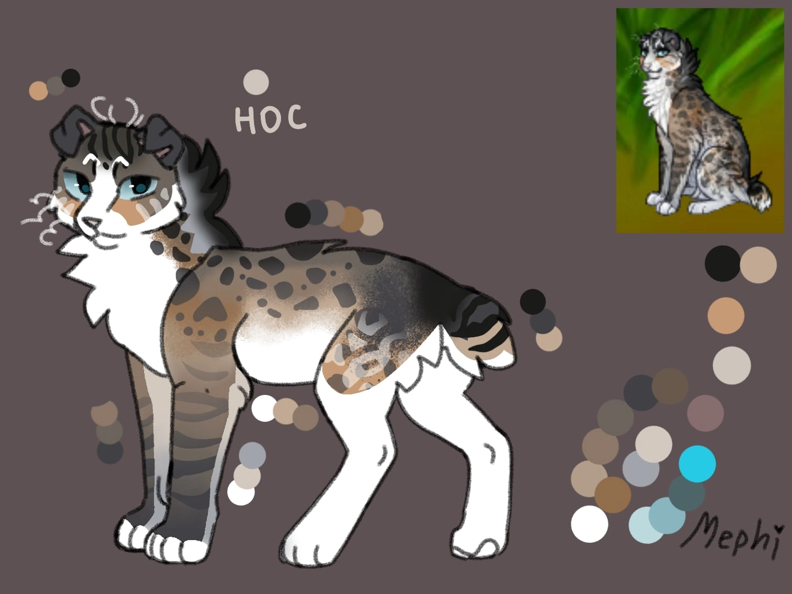
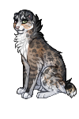

Хомячочек


этот статный большой то есть маленький (смол) кот получил милейшее имя хомячочек
но вы не думайте что он маленький и беззащитный. КОГДА ЕГО РОЖАЛИ МУСОРА ДРОЖАЛИ. этот обольститель женских (и не только) сердец очень умен...
нежная шерсточка светленьких цветов превомходно замаскируется среди степных травушек.. вы думаете хомяки только на это и способны? как же вы ошибаетесь. этот челодой моловек покоряет горы скалы деревья и воды. и что что он грызун
Галерея

@prokazushka @raschudesnyshka